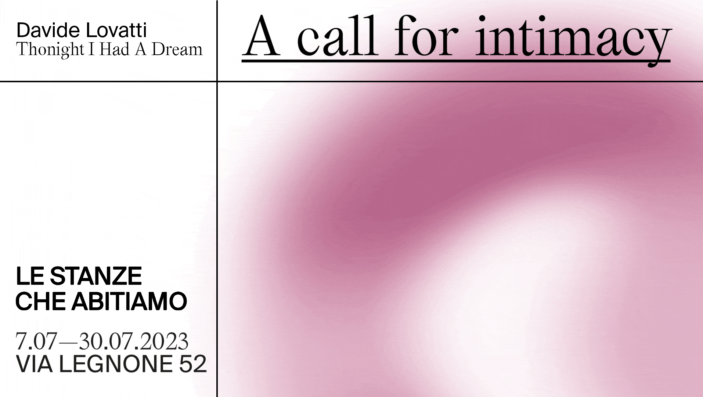

A Call for Intimacy is a collective photography exhibition featuring five artists on a journey of self-discovery. In this visual experience, the photographers present their most personal projects, revealing a different side of themselves and opening their private rooms to the public. The exhibition unfolds as a path where visitors are invited to step into the spaces the photographers “inhabit,” allowing themselves to be carried into their inner worlds.
This section showcases the most intimate moments captured by the artists, offering a glimpse into their personal creative worlds and narratives.


Graphic Designers Tommaso Franzoso, Camilla
Asian Fake | Warner Music Italy